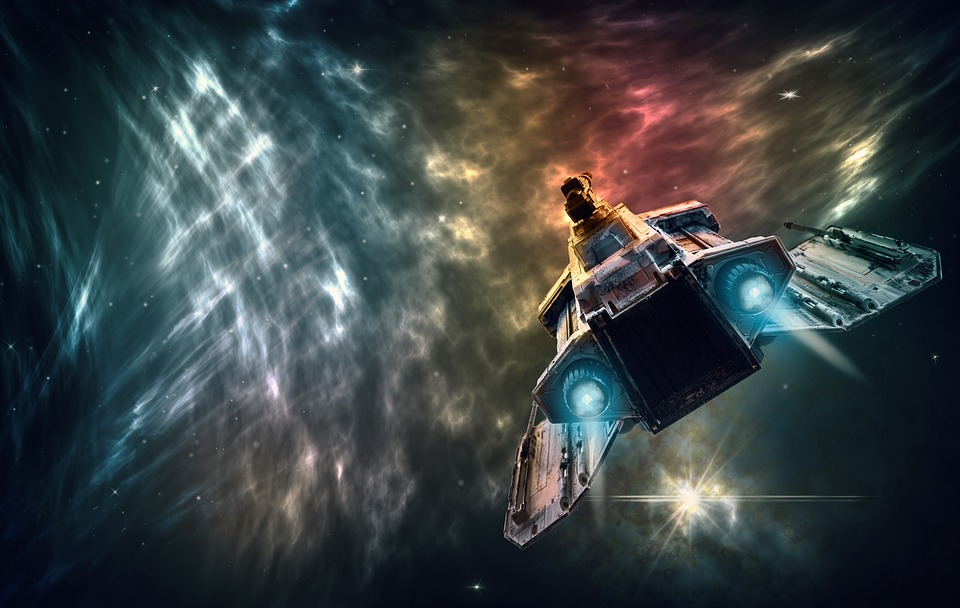

It is the year 3021.
The alarming trends of capitalism and geopolitics of over 1,000 years prior to this year, combined with some aggressive advancements in science and technology, have led humans to establish societies across multiple planets throughout the Milky Way. What were once conflicts occurring within a "pale blue dot", as Carl Sagan once called Earth, expanded exponentially into an intragalactic scale that encompasses many entire planets. Countless armed conflicts occur perpetually across the known galaxy, making it humanly impossible to keep track of most events even if one were to spend all day and night on social media. It is however, easier to follow events whose impacts involve multiple planets, especially if the consumer's planet is one of them.
You are a senior at university and have strong aspirations to become a cadet in Earth's space force. You've become quite familiar with piloting and managing various spaceships; your mother is an engineering manager for a giant company that mass produces them and her colleagues helped train you in their downtime over the years. You had just finished your last day of the week for classes and were checking social media for updates on the armed conflict between the Plutonian government and a notorious space pirate called Wild Wallace.
The cause for the conflict was Pluto's aggressive, violent, and oppressive imperialization of Neptune, Uranus, and Jupiter, and all of their moons, that has caused immense strife and revolt over the years. Wallace, hailing from the colonized Callisto, became on of the most feared and wealthiest space pirates within half a decade of terrorizing Plutonian merchant ships that carried valuable cargo and money from moon to moon across Pluto's empire. Six months ago, the pirate and his crew sped off with a highly powerful object of political and monetary value called Tara's Orb. Wallace masterfully stole it from Pluto's underground Hexagon building, and escaped to eventually hide the object in a distant planet across the galaxy.
In the last 3 years prior to this year, Pluto hunted the pirate's ships ten times, and failed every time. Regarding the current conflict, news broke out this morning that Wild Wallace was killed in battle along with most of his crew by Pluto's forces. Much of Earth has been grieving, especially the youth, who found Wallace to be a very charismatic figure who was a symbol of revolt against the same ills that plagued Earth's intraplanetary history for millennia.
Today
As you walk to home through an empty field, you see smoke billowing from a spot with sounds of a man wailing in pain. You follow the sound to see a destroyed pod with its door open and a man inside. The emblem on the pod is that of Wild Willace's fleet. Seriously injured and struggling to speak, he gives you a map to find the powerful object. He warns that there are many ways to end up in great peril following the directions that involve flying to multiple planets, with options designed to trick any unwanted holders of the map. Being just a grunt, he does not know the directions but he managed to grab the map before Wallace's ship went down. You thank him and help him over to the nearest iHop for some pancakes. You then head over to your spaceship's hangar with the map in hand and supplies to load, ready for takeoff.

And we have taken off! The first part of the map involves some decision-making. Two giant wormholes appear in front of your ship.
Which wormhole will you go through?